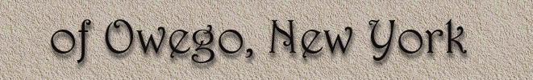
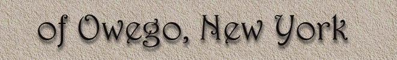

and Wellsboro, Wilkes-Barre and Sayre/Athens PA!

and Wellsboro, Wilkes-Barre and Sayre/Athens PA!
|
Welcome to the "Shortline Railroads of Owego, New York" page! I created this webpage because Owego has always been firmly within my "railfanning universe". I'm a "Valley Native", born in Sayre and grew up in Waverly, only 20 miles from Owego, and I have always been very interested in the various shortlines that have operated in Owego since the 1970's.. And..the history of these lines has always been somewhat confusing, and there has never been one comprehensive locomotive roster for these railroads anywhere on-line before. And...the creation of the Lehigh Railway, running out of my hometown of Sayre, PA in early 2009, was also a catalist for beginning this page. This
collection of webpages
contains EIGHT pages!
Tioga
Central
Page 1 - Main page (you are here) Page 2 - History of the lines, timeline, and how the railroads are all inter-related. Page 3 - The Tioga Central. Page 4 - Owego & Harford and Tioga Scenic. Page 5 - Luzerne & Susquehanna. Page 6 - Lehigh Railway. Page 7 - Photos of the TC Alcos in Waverly & Sayre, before they arrived in Owego.
Continue
to Page 2
|


Scot Lawrence
Rochester, NY
Last updated March 20, 2017